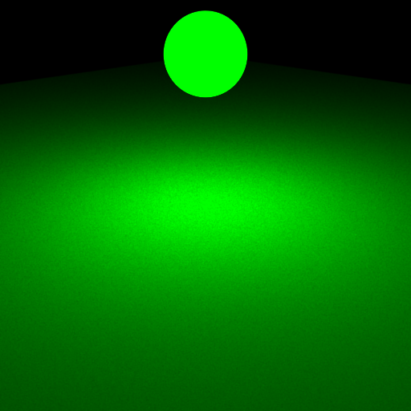
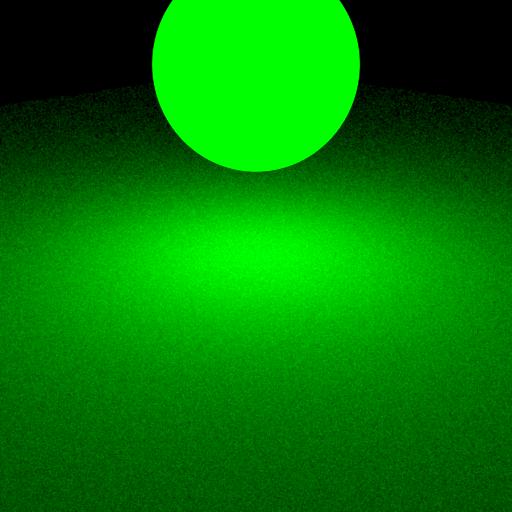
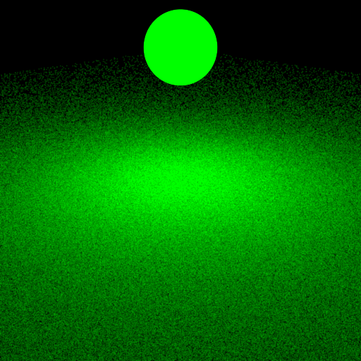
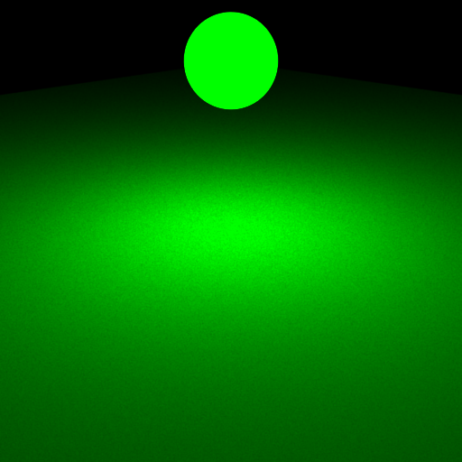
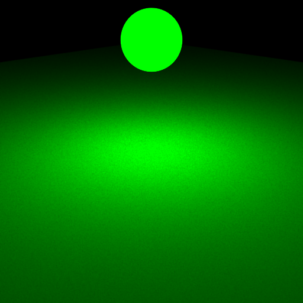
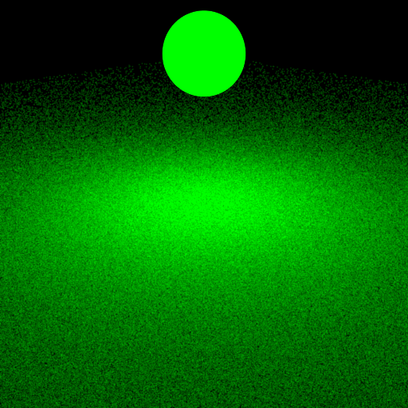
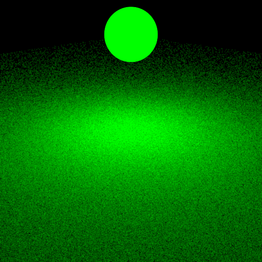

**Homework 3 - Monte Carlo Ray Tracing**
Student Name: Wu Zhanyi
Student ID Number: 22-737-266
Did you attend the exercise handout? No
(Note: please read the [supplementary](#supplementary) section first before working on this report.)
# Part 1: Light Sampling
## Integrator Implementation
**Time spent on this task: 1h**
**Describe your implementation of `direct_ems`.**
First, to handle area emitters, if the intersection mesh is a area emitter, then its radiance should be counted.
Then sample a random emitter in the scene, if the shadowray is occulded, return 0. Otherwise compute brdf and corresponding radiance.
The most problem I faced here is the number of emitters. I have to times it to get correct answer.
## Shape Area Light
**Time spent on this task: 30min**
**Describe your implementation of `AreaEmitter::eval(...)`.**
First check the $\cos$ between $wi$ and $normal$. $\cos$ term should less than 0 to make sure the light is coming towards the emitter.
**Describe your implementation of `AreaEmitter::pdf(...)` and `AreaEmitter::sample(...)`.**
For pdf computation, since the pdf from `m_shape->pdfSurface` is area based. I should do a conversion to solid angle based.
For `sample`, use `m_shape->sampleSurface` to sample the surface and set lRec. The returning should be $\frac{radiance}{pdf}$
## Validation
**Comparison: sphere/sphere_pointlights_ems**
**Comparison: sphere/sphere_ems**
**Comparison: sphere/sphere_mesh_ems**
**Comparison: sphere/sphere2_ems**
**Comparison: sphere/sphere2_mesh_ems**

**Comparison: odyssey_ems**
**Comparison: veach_ems**
# Part 2: BRDF Sampling
## Integrator Implementation
**Time spent on this task: 30min**
**Describe your implementation of `direct_mats`.**
Similar to emitter sampling, here I should sample BRDF. Notice that sample from BRDF already contains $\cos$ term.
## Microfacet BRDF
**Time spent on this task: 20min**
**Describe your implementation of `Microfacet::eval(...)`.**
For `pdf` and `eval`, follow the instruction is enough.
**Describe your implementation of `Microfacet::sample(...)`.**
Here I should convert the original sample to $[0,1]^2$ since there are two different cases. And the returning should times a $\cos$ term.
## Validation
**Comparison: sphere/sphere_mats**

**Comparison: sphere/sphere2_mats**

**Comparison: odyssey_mats**
**Comparison: veach_mats**
# Part 3: Multiple Importance Sampling
## Integrator Implementation
**Time spent on this task: 5h**
**Describe your implementation of `direct_mis`.**
Most work have been done in the last two parts. Here I used quite lot time to find and handle weights.
The first problem is the mirror. First I didn't even notice that. Because in MIS, I have to calculate weights and weights on mirror will be $0$. So codes in `direct_mats` are not working here. Here for mirror,
just use regular computation without weights is enough.
And for weights, one of colleague told me that n_lights should be included. After divided $pdf_{EM}$ by n_lights, everything works.
But there are some differences between rendering result and reference. My annulus is much brighter than that in reference and the dark ball in front of third light is brighter. Some of students mentioned thess differences in forum.
They said they are due to numerical errors. So I skipped these minor differences.
## Validation
**Comparison: odyssey_mis**
**Comparison: veach_mis**
**Comparison: veach_mis_weights**
# Part 4: Four-way Comparison
**Odyssey**
**Veach**
# Feedback
**Use this section to provide feedback about this assignment (each task, the handout, Nori, etc.). We appreciate your opinions to help improve future homeworks and projects.**
More hints are better.
# Supplementary
* For each task, please note down the time you spent working through it and use at least a few sentences to describe your implementation. If applicable, also report the problems you encounter (e.g. whether or how it's solved, what is the difficult part).
* Please let us know to what extent your code is working (e.g. you only managed to work through part of this assignment, or your solution doesn't operate as expected in some corner cases). We encourage you to share your thinking process, and points will be granted based on your description even if the code is not 100% functioning.
* Nori generates both EXR and PNG format output. Please use PNG for image comparison in the report.
* This report template uses [Markdeep](https://casual-effects.com/markdeep/), which supports Markdown syntax in HTML file. For example usage, please refer to the [official demo document](https://casual-effects.com/markdeep/features.md.html).
* LaTeX is also supported for typing mathematical formulas:
$$
L_o(\mathbf{x}, \omega_o) = \int_{\Omega} L_i(\mathbf{x},\omega_i)\, f(\mathbf{x}, \omega_i, \omega_o)\, |\cos\theta_i|\, \mathrm{d}\omega_i
$$


 

 
